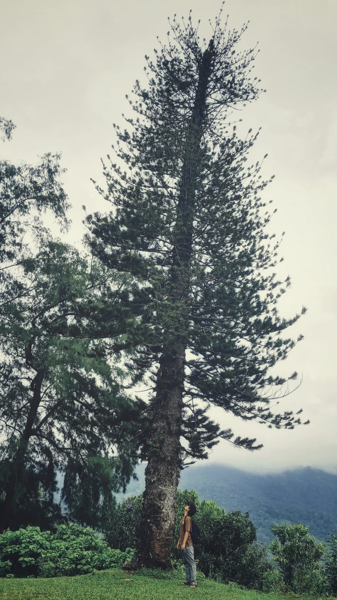

Student by enrollment, researcher by curiosity, occasional casualty of exam season
I started ML for fun and ended up deep in research papers, failed runs, and exam week chaos.

My interests want LLMs, systems, and building cool things. My course list wants abstract math proofs, surprise exam patterns, and emotional damage. Every semester feels like two different operating systems fighting for the same RAM, and I am the unlucky process manager asking: why is this theorem in my AI timeline right before finals?
Processing raw human input into something occasionally useful, a biography in 5 layers.
Every great model starts with raw, unoptimized noise. In my case: an Indian kid who mistakenly thought 'playing video games' naturally translated to 'enjoying calculus.' I somehow ended up at IISER Thiruvanathapuram studying topics that work better as sedatives at parties. The tokenization phase was brutal, mostly breaking down my remaining innocence into highly dimensional academic trauma.
Like a proper attention mechanism, I try to attend to everything simultaneously: LLMs, multi-agent systems, XAI, and why my code worked yesterday but not today. I have multiple heads, but absolutely zero attention span for anything outside an IDE. My Query is "how do I force this model to stop lying?", my Key is chronic sleep deprivation, and my Value... well, my value is still converging.
Ah, Reality Normalization, that incredibly humbling layer where your 'groundbreaking' idea gets absolutely dismantled by Reviewer 2. Residual connections? That's just me falling back on the excuse "at least the Python script runs" when the mathematical proofs collapse. The skip connection to the campus coffee machine is literally the only thing preventing a vanishing gradient of my will to live.
This is where the alleged "thinking" takes place. While normal people expand their social circles, I exclusively expand my dimension of hidden vectors. I build multi-agent systems, dissect LLMs, and maintain a GitHub profile that clearly screams "I have no offline hobbies." PyTorch is my primary love language; TensorFlow is that toxic ex we agreed never to text again.
After all that expensive compute, what is the output? A research student clutching IBM certifications, a Credly profile with actual badges, and the concerning social habit of explaining neural architectures to captive audiences who definitely did not ask. I'm actively working on LLM interpretability, because apparently, accepting that AI works by magic isn't scientifically rigorous enough. The forward pass is incomplete. Loss is still nonzero. Send help.
I subjected myself to this architecture in 2024, and here I am in 2026 still waiting for the code to compile. The diagram on the left illustrates the tragic pipeline that took a healthy, functioning human and trapped them in a latent space of multi-agent systems and Large Language Models. I study exactly what goes on inside these cursed blocks, specifically, why my scripts run flawlessly at 3 AM but spontaneously combust by sunrise.
Because if we're going to give neural networks the ability to confidently gaslight humanity, the least we can do is figure out how they're doing it. And that's my problem now.
Dive into my workspace or learn more about me.